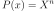

MonomialFunction¶
- class MonomialFunction(*args)¶
Monomial function class.
- Available constructors:
MonomialFunction(degree)
- Parameters
- degreint
Degree of the monomial function
Notes
The monomial function defines as :

Examples
Create a standard absolute exponential covariance function:
>>> import openturns as ot >>> P = ot.MonomialFunction(3)
Methods
__call__(x)Call self as a function.
draw(xMin, xMax, pointNumber)Draw the function.
Accessor to the object's name.
getId()Accessor to the object's id.
getName()Accessor to the object's name.
Accessor to the object's shadowed id.
Accessor to the object's visibility state.
gradient(x)Compute the gradient at point
 .
.hasName()Test if the object is named.
Test if the object has a distinguishable name.
hessian(x)Compute the hessian at point
.setName(name)Accessor to the object's name.
setShadowedId(id)Accessor to the object's shadowed id.
setVisibility(visible)Accessor to the object's visibility state.
- __init__(*args)¶
- draw(xMin, xMax, pointNumber)¶
Draw the function.
- Parameters
- x_minfloat, optional
The starting value that is used for meshing the x-axis.
- x_maxfloat, optional,

The ending value that is used for meshing the x-axis.
- n_pointsint, optional
The number of points that is used for meshing the x-axis.
Examples
>>> import openturns as ot >>> from openturns.viewer import View >>> f = ot.UniVariatePolynomial([1.0, 2.0, -3.0, 5.0]) >>> View(f.draw(-10.0, 10.0, 100)).show()
- getClassName()¶
Accessor to the object’s name.
- Returns
- class_namestr
The object class name (object.__class__.__name__).
- getId()¶
Accessor to the object’s id.
- Returns
- idint
Internal unique identifier.
- getName()¶
Accessor to the object’s name.
- Returns
- namestr
The name of the object.
- getShadowedId()¶
Accessor to the object’s shadowed id.
- Returns
- idint
Internal unique identifier.
- getVisibility()¶
Accessor to the object’s visibility state.
- Returns
- visiblebool
Visibility flag.
- gradient(x)¶
Compute the gradient at point
.- Returns
- gradientfloat
The value of the monomial’s first-order derivative at point
.
Examples
>>> import openturns as ot >>> P = ot.MonomialFunction(3) >>> print(P.gradient(1.0)) 3.0
- hasName()¶
Test if the object is named.
- Returns
- hasNamebool
True if the name is not empty.
- hasVisibleName()¶
Test if the object has a distinguishable name.
- Returns
- hasVisibleNamebool
True if the name is not empty and not the default one.
- hessian(x)¶
Compute the hessian at point
.- Parameters
- xfloat
Input value.
- Returns
- hessianfloat
The value of the monomial’s second-order derivative at point
.
Examples
>>> import openturns as ot >>> P = ot.MonomialFunction(3) >>> print(P.hessian(1.0)) 6.0
- setName(name)¶
Accessor to the object’s name.
- Parameters
- namestr
The name of the object.
- setShadowedId(id)¶
Accessor to the object’s shadowed id.
- Parameters
- idint
Internal unique identifier.
- setVisibility(visible)¶
Accessor to the object’s visibility state.
- Parameters
- visiblebool
Visibility flag.